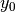
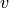

Assignment 3¶
This is my write-up for Assignment 3.
Since BargModel.m creates a structure, I implemented the bargaining model data-structure as a Python class with the same properties as the matlab structure. Initializing this class takes the same arguments as the matlab function BargModel.m and performs the similar computations.
The psc585.ps3.BargModel.func() evaluates the nonlinear system of functions, and is a port of the matlab function BargF3. I tested the results from this function against results from the matlab code to ensure its correctness.
The following code generates a psc585.ps3.BargModel object.
import scipy as sp
from scipy import linalg as la
from scipy import io
import psc585.ps3
Cs = io.loadmat("Cs.mat")["Cs"]
ideals = sp.array([[-1./4, -1./4],
[-1./4, 3./4],
[7./16, 7./16],
[7./16, -3./16],
[-1./3, -1./2]])
# Discount
d = 2./3
# Proposal probability
p = sp.array([1./5] * 5)
# Coalition specific utility (constant)
c = 45.
# Utility constant
K = 10
model = psc585.ps3.BargModel(ideals, d, p, Cs, c, K)
Part a¶
I implemented Newton’s method to find the roots of the nonlinear
system of equations for this bargaining model, , in
the method psc585.ps3.BargModel.newton. It takes a values
of  and
and  as inputs and returns the solved system. I
will use this in parts b and c.
as inputs and returns the solved system. I
will use this in parts b and c.
part b¶
Since the code for generating the values of  is ugly and tedious, I quarantined it to the function psc585.ps3.make_y0().
def make_y0(model):
""" Make y0 """
def mu_ij(i, j):
return -sp.sqrt(uij[j, i] + (model.c / (1 - model.p[j]))
- (1 - model.d) * ubar[j]
- model.d * v0[j])
# \bar{u} : status quo payoffs
ubar = -(model.ideals ** 2).sum(1) + model.K
# TODO: where did plus 10 come from?
uij = (-(model.ideals[:, 0] - model.ideals[:, 0][:, sp.newaxis])**2 +
-(model.ideals[:, 1] - model.ideals[:, 1][:, sp.newaxis])**2 + model.K)
# v_0
v0 = (uij * model.p[:, sp.newaxis]).sum(1) + model.c
## \lambda_0
lam0 = sp.ones((5, 6)) * -sp.sqrt(model.c)
# if m_i = i
lam0[sp.r_[0:5], sp.r_[0:5]] = 1
lam0 = reshape(lam0, (lam0.size, ))
# x_0
x0 = sp.reshape(sp.repeat(model.ideals, 6, axis=0), (60, ))
# \mu_0
mu0 = sp.zeros((5, 6, 2))
# For players
for i in range(5):
# For coalitions
for mi in range(6):
# for each other player in the coalition
ii = i * 6 + mi
mu0[i, mi, 0] = mu_ij(i, model.part1[ii])
mu0[i, mi, 1] = mu_ij(i, model.part2[ii])
mu0 = sp.ravel(mu0)
# y_0
y0 = sp.concatenate((v0, lam0, x0, mu0))
return y0
I create the initial values and confirm that .
y0 = make_y0(model)
print la.norm(model.func(y0, t=0)[0], inf)
part c¶
The method psc585.ps3.predcorr() implements the predictor-corrector method as described in the homework. I have to make a copy of y since the method overwrites y in-place. I use values of and .
y = y0.copy()
ret = model.predcorr(y, 0.0001, 0.25, verbose=True)
The following text block verbosely prints for each iterations of the
predictor-corrector method, the values of and ,
and whether the newton method converged.
In [315]: ## working on region in file /tmp/python-5124avX.py...
1: 0.250000 0.250000
success
2: 0.500000 0.250000
success
3: 0.750000 0.250000
success
4: 1.000000 0.250000
LinAlgError
fail
5: 0.875000 0.125000
success
6: 1.000000 0.250000
LinAlgError
fail
7: 1.000000 0.125000
LinAlgError
fail
8: 0.937500 0.062500
success
9: 1.000000 0.125000
LinAlgError
fail
10: 1.000000 0.062500
LinAlgError
fail
11: 0.968750 0.031250
success
12: 1.000000 0.062500
LinAlgError
fail
13: 1.000000 0.031250
LinAlgError
fail
14: 0.984375 0.015625
success
15: 1.000000 0.031250
LinAlgError
fail
16: 1.000000 0.015625
LinAlgError
fail
17: 0.992188 0.007812
success
18: 1.000000 0.015625
LinAlgError
fail
19: 1.000000 0.007812
LinAlgError
fail
20: 0.996094 0.003906
success
21: 1.000000 0.007812
LinAlgError
fail
22: 1.000000 0.003906
LinAlgError
fail
23: 0.998047 0.001953
LinAlgError
fail
24: 0.997070 0.000977
LinAlgError
fail
25: 0.996582 0.000488
success
26: 0.997559 0.000977
success
27: 0.999512 0.001953
LinAlgError
fail
28: 0.998535 0.000977
success
29: 1.000000 0.001953
LinAlgError
fail
30: 0.999512 0.000977
success
31: 1.000000 0.001953
success
The equilibrium parameters for 
In [316]: print y[:5]
[ 9.82718383 9.35693483 9.70886091 9.84671485 9.56920593]
for the multipliers 
In [318]: print y[5:35].reshape((5, 6))
[[ 1. 0.24128118 0.24175891 -0.11393624 -0.11136634 0.24017243]
[ 0.25073746 1. -0.12934978 -0.04891986 0.19726618 -0.16859301]
[-0.05004526 -0.05037 1. 0.61318927 -0.07417953 -0.07207384]
[-0.11581658 0.17423023 0.17365695 1. -0.11491219 0.17284308]
[-0.11277368 -0.50775814 0.33922115 -0.5087534 1. -0.50831366]]
for the proposals 
In [321]: print y[35:95].reshape((5, 6, 2))
[[[ 0.03581051 0.03581051]
[-0.04938951 -0.06843082]
[-0.25 -0.06857902]
[ 0.03570927 0.03570927]
[ 0.03529597 0.03529597]
[-0.03437968 -0.23039815]]
[[-0.25 0.16357205]
[ 0.05187064 0.08098626]
[-0.6123213 0.10822621]
[ 0.16701107 0.18134855]
[-0.2902306 0.146541 ]
[ 0.03859446 0.05809853]]
[[ 0.04106067 0.04106067]
[ 0.04067825 0.04067825]
[ 0.16683383 -0.08470875]
[ 0.4375 0.26686691]
[ 0.07652117 -0.0015283 ]
[ 0.07680454 -0.00118366]]
[[ 0.09070425 0.01035025]
[ 0.2068622 -0.20846707]
[ 0.19104587 -0.03367464]
[ 0.22207977 0.10625486]
[ 0.08793425 0.00782598]
[ 0.27932951 -0.25162317]]
[[-0.30309636 -0.04644543]
[ 0.06871865 -0.01101786]
[-0.04692969 -0.38389041]
[ 0.05352833 0.00164624]
[-0.04287654 -0.06403992]
[ 0.06877839 -0.0109452 ]]]
and for the multipliers
In [325]: print y[95:].reshape((5, 6, 2))
[[[ -2.63724815e-01 2.70275716e+00]
[ 8.35617365e-01 1.51815886e+00]
[ 8.46844608e-01 -4.99879112e-01]
[ 2.71755490e+00 -4.76020785e-02]
[ 2.77996995e+00 -2.07438112e-01]
[ 7.15662159e-01 -5.41109578e-01]]
[[ 1.16997422e+00 7.36396503e-01]
[ 8.99918010e-01 1.14919753e+00]
[ -1.36177129e+01 4.75168845e+00]
[ -4.92874645e-01 1.23025113e+00]
[ 1.40565701e+00 1.06483263e+00]
[ 1.29036596e+00 9.26713729e-01]]
[[ 1.14325638e+00 -2.85512375e-01]
[ 1.14446990e+00 -1.59520001e-01]
[ -3.22217051e+00 1.68924686e+00]
[ -1.31205685e-02 1.65828917e+00]
[ -1.54354285e-01 9.49563645e-01]
[ -2.43844579e-01 9.48653771e-01]]
[[ 1.74320936e+00 6.81377533e-01]
[ 6.80850428e-01 3.50592486e-01]
[ 1.80185071e+00 -1.11698007e+00]
[ 6.75729287e-01 -4.11523868e-01]
[ 7.22599285e-01 9.50496843e-01]
[ 5.86090170e-01 4.97424615e-01]]
[[ -3.59203438e-01 7.56621537e-01]
[ -2.68063319e-01 1.07562074e+00]
[ -4.69416808e-01 1.42716156e+00]
[ 3.15804852e-01 1.10002563e+00]
[ 8.10805293e-01 9.01937450e-01]
[ 1.07586695e+00 -3.74303520e-01]]]